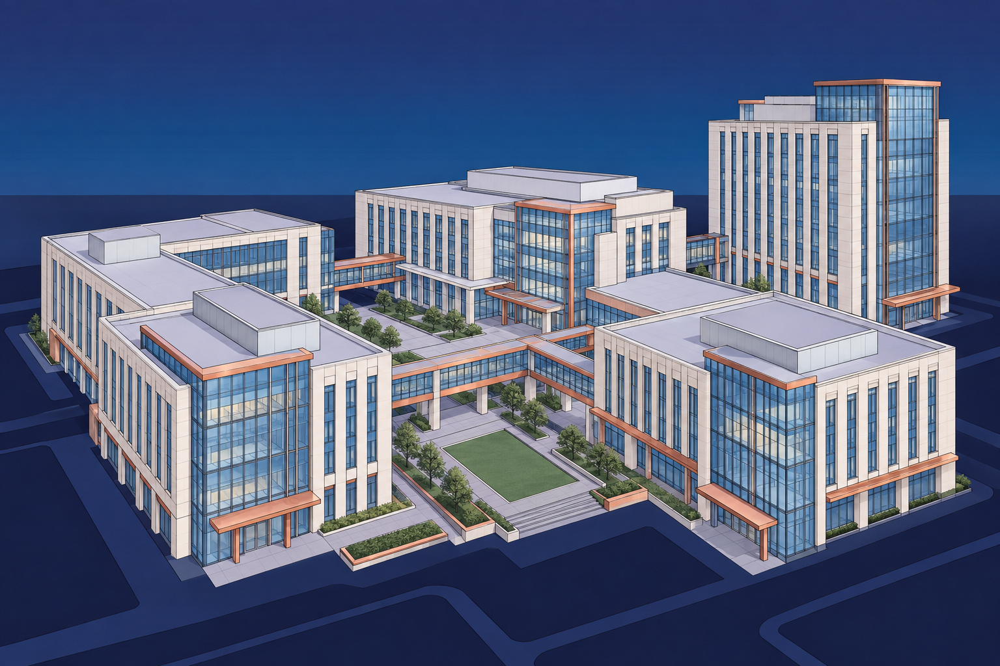

NorthStarWe Bring Answers.
NorthStarWe Bring Answers.TechnologyIndustry briefing / 01
Technology / The recovery priorities
The facilities behind your technology.
Plan physical-site recovery around building conditions, controlled access and the technical teams responsible for your operations.

Define the work. Coordinate the dependencies.
Water, smoke and damaged building materials can affect spaces that support digital and research operations. NorthStar's physical-property recovery services can be scoped around your site's requirements and coordinated with the specialists responsible for technical systems.
01
Site conditions
02
Controlled access
03
Technical coordination
40+ years of experience
Emergency response · Environmental services · Reconstruction